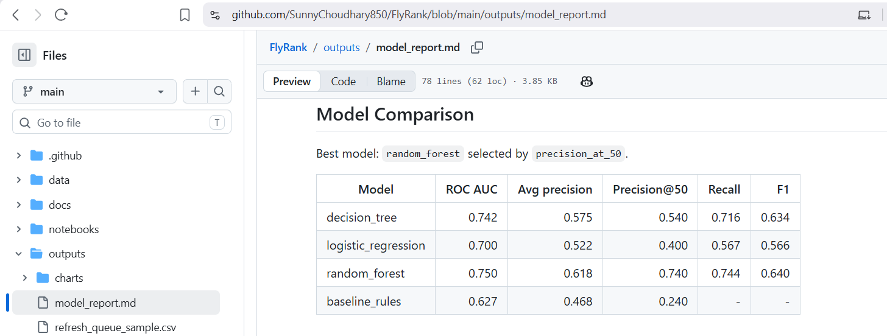
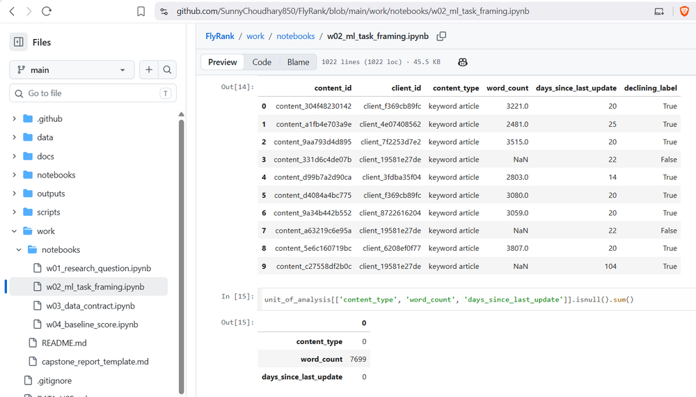

FlyRank ML Internship — in progress
Content teams manage thousands of pages, but nobody can check all of them. So most teams end up guessing — reviewing whatever's oldest, or whatever a manager happens to remember — while pages that are actually losing traffic quietly slip through the cracks.
I framed this as a problem of finding pages that are declining before anyone notices — not by age, but by real signals like impressions, search position, and how long a page's been getting traffic. I defined "declining" using actual trend data instead of guessing, and picked my success metric around what a team would really use: not overall accuracy, but whether the top 50 flagged pages are actually worth reviewing. I also made sure to split my data by client, not randomly — otherwise a model could quietly cheat by learning one client's quirks instead of real patterns.

Model comparison — random forest reaches 0.740 precision@50 vs. 0.240 for a simple rule-based baseline.

Defining "declining" from real trend data — not a guess.
Once it's done, a content team won't have to guess anymore. They'll get a ranked list every week — the pages most likely losing traffic, right at the top — so they know exactly where to spend their limited review time, instead of relying on memory or random checks.
This uses a proxy label, not a causal one — a declining trend doesn't confirm why a page is declining. Results shown here come from a starter pipeline on a limited slice of data; my own end-to-end model is still being built and validated.